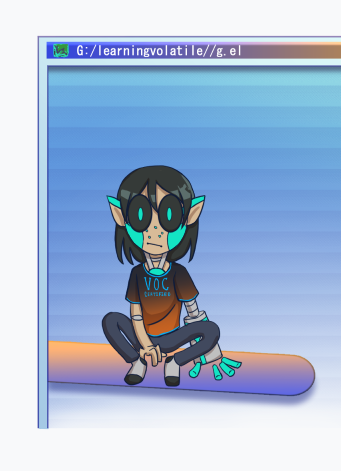

I'm using this website assignment as a chance to work on a website for a personal project, having to do with computer mascots. Here's the UTD CS department's page.
An Ukagaka, or ghost, is a computer mascot that can talk to you, manage a calendar, take out your recycling bin, and much more! Some can also interact with each other. They run on the baseware SSP (Sakurascript Player) and originated as a Japanese program which can be downloaded on the left sidebar of this website here: ssp.shillest.net. The English community for ghosts has grown a lot over the years, but is popular for its relation to the game Undertale by the ghosts inspired by it below:
Personally, I have been working on ghosts myself, one by myself and two collaborative efforts:
ZaigaZaiga is a ghost created for the 2020 Ghost Jam on the Ukagaka Dream Team Discord. Collaboration with nasaalving. |
GelGel is my personal project ghost of my original character from my dystopian cyberpunk works set in the fictional location Atlas City. |
NoxAn upcoming ghost from the upcoming 2021 Ghost Jam. Collaboration with dransnake. |
|---|